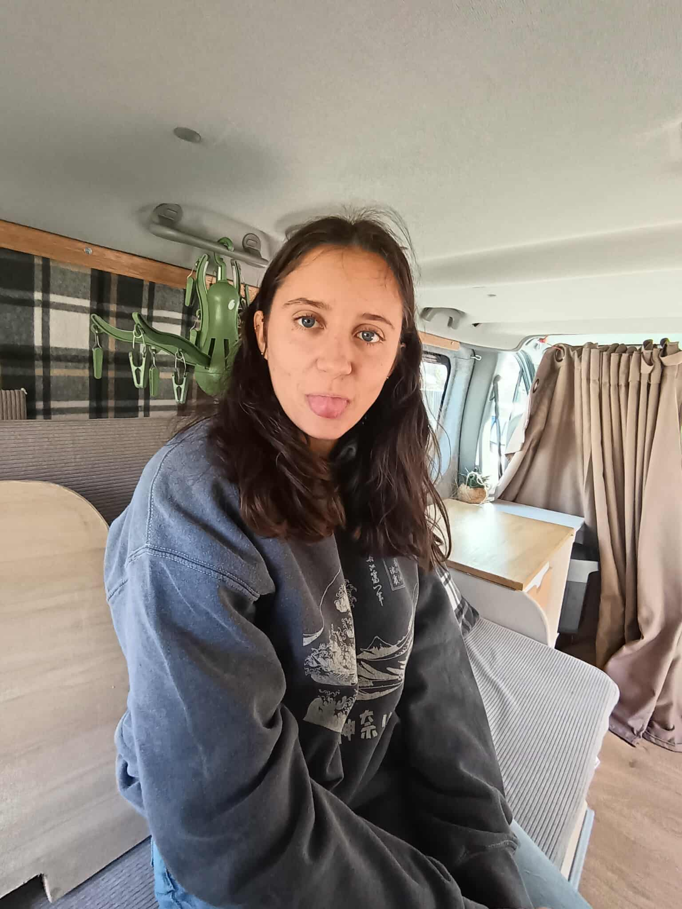

☰

Goûteuse professionnelle autoproclamée, elle semble prête à risquer sa vie pour la science — ou plutôt pour la curiosité — en avalant du tabac cru ou en improvisant des jésus maison. À force d’expérience, elle a obtenu son badge de survie gustative.
Ancienne visiteuse du week-end, elle est rapidement passée de 2 dodos la Mine à 7 dodos non-stop, conquérant peu à peu chaque recoin du salon. C’est d’ailleurs là qu’elle a découvert sa passion pour les Pompim’s, six mois après être arrivée à Centrale. Attention cependant : quand elle fly, ses bras deviennent des armes, et sa peau marque au moindre contact — la Mine, c’est dangereux.
En bonne 1A qui se respecte, elle a succombé au 2A power en deux semaines chrono. Capable de disparaître pendant trois heures en soirée pour mieux revenir rayonnante, elle transforme toute réapparition en évènement — câlins garantis pour tout le monde sur son passage.
Studieuse à souhait, elle a même remplacé le Sham par de l’info au S6 (oui, ça existe). Quand elle ne révise pas, elle se lance dans des activités tout aussi sérieuses : découpe de balais, lavage de tapis, ou services à domicile dignes d’un sketch. Les enfants d’EP l’ont piétinée toute l’année, et elle a presque envisagé de signer pour un deuxième tour.
Côté réseau, elle détient l’algorithme Instagram le plus maudit de la planète : entre pattes de poulet masseuses et femmes enceintes, on ne sait plus trop ce qu’elle regarde. Elle lime compulsivement ses ongles dès que le stress monte, et médite encore sur le rangement des étagères du salon, projet en gestation depuis mars.
Grande sensible, elle a versé une larme en découvrant la plage du MSB, avant de repartir fredonner la BO de L’Âge de glace, qu’elle connaît presque aussi bien que ses colocs. En cuisine, elle expérimente tout : parfois étonnant, rarement délicieux, mais toujours nourrissant. Et surtout, elle reste fan inconditionnelle de Sortir du cadre depuis la Bumine.
Elle a promis de ménager sa voix pour le bus du WEI, mais tout le monde sait qu’elle se la cassera sur Moumou la reine des mouettes. D’ailleurs, elle a déjà perdu sa voix au bout d’un jour de Delta. Pour l’instant, elle se concentre sur sa liste de chansons Mine-ban, plus longue que son bras, et plus chaotique que ses recettes.